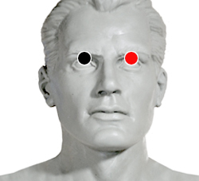

Neisseria Catarralis
Pares
párpado - párpado
supraespinoso - cerebelo
dorsal 2,4 - lumbar 1,2

Generalidades:
Afecta la Cabeza y/o la Laringe. Si se combina con la Gonorrea se caen los dientes, Gingivitis y Otitis. Se confunde con sinusitis, Exceso de moco nasal. Catarro común.
También conocida como Moraxella Catarrhalis es un bacilo gramnegativo con forma de coco. Habitualmente se encuentra en la cavidad nasal o bucal en forma asintomática, por lo que se le considera un patógeno oportunista.
Transmisión:
Mas común que cause infección en pacientes inmunodeprimidos, enfermos de SIDA, fumadores, entre otros.